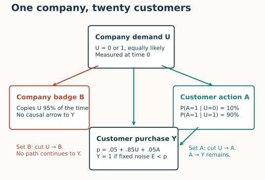
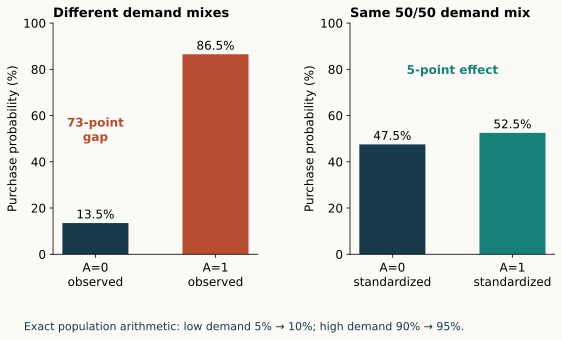
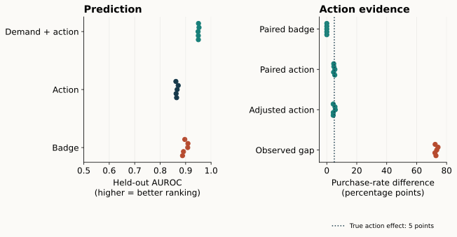

Year 5 · Lesson 185 · From prediction to action
A good prediction can suggest a useless action
Your win: explain why a predictor can rank customers correctly yet recommend an ineffective action. Then implement the intervention that proves the distinction in a fully specified simulator.
Observed evidence: all five seeds of the approved original synthetic experiment completed. This is a complete teaching experiment, not a published-paper benchmark reproduction. Learner defense remains PENDING_WRITTEN_DEFENSE.
1 · A leaderboard answers only the first question¶
The frontier sequence explores better ways to predict from relational data. This lesson changes the question: what should we change to improve an outcome? It does not require you to have completed the intervening model lessons. Lesson 184 separated legal context from learned attention. Even if both are correct, a prediction need not identify an effective action. Recall Lesson 181: a trustworthy score needs a legal information set and a clearly identified query. Here those checks pass, yet a proposed action still fails.
A sales manager sees that customers at badged companies buy more often. A badge-only predictor ranks them well, even on companies withheld from training. The manager proposes giving every company a badge. Should purchases rise?
Prediction estimates an outcome under a data-generating process. Intervention changes part of that process. A feature can be useful for the first without being a useful lever for the second. Pearl formalizes this distinction by replacing a variable's generating rule while retaining the remaining rules. Primary reading: Pearl (2009), §§2 and 3.2.1.
2 · Follow the company relationship¶
A structural causal model, abbreviated SCM, declares how variables generate one another. Its arrows encode assumptions about causes. They are not arrows inferred from a foreign-key join or from predictive importance.
Our SCM has four variables. U is company demand: 0 means low and 1 means high. Despite the letter U, demand is observed in this experiment. B is the company's badge. A is a customer service action. Y is a later purchase, coded 0 or 1. Each company has twenty customers. Their shared demand and badge create dependence across rows.


Database structure. companies(company_id, U, B, available_at) joins to customers(customer_id, company_id, cutoff, split). Customer IDs join to actions(customer_id, A, action_at) and outcomes(customer_id, Y, E, outcome_at). A primary key uniquely names a row; a foreign key refers to a row in another table. The prediction query is (customer_id, cutoff).
All company features arrive at time 0. Actions occur at time 1, when prediction is made. Purchases occur at time 2. The outcome table also stores E, a random threshold used only by the evaluator. Predictors may see B, A, or (U,A); they never see E, Y, or future fields. The action-only predictor is therefore an after-action forecast, not a pre-action decision rule.
The precise generating rules. A Bernoulli draw produces 1 with its stated probability. Company demand is Bernoulli(0.5). The badge equals demand with probability 0.95. Action probability is 0.1 for low-demand companies and 0.9 for high-demand companies. Customer thresholds E are independent uniform draws between 0 and 1. Purchase probability is:
p = 0.05 + 0.85 × U + 0.05 × A, followed by Y = 1 if E < p, otherwise 0.
These constants are our teaching choices. They do not come from an empirical sales study. B is deliberately absent from the purchase equation. No customer's action changes another customer's outcome in this baseline.
In plain terms. The badge usually tells you which companies already have demand. Printing a new badge does not create that demand.
3 · Observe a badge, or assign one?¶
Conditioning selects cases with an observed value. Among companies already carrying a badge, high demand is common. Doing, written do(B=1), assigns that value regardless of the old rule. It does not select a high-demand population. This is the distinction pictured by cutting the incoming arrow to the assigned variable. Pearl, §3.2.1.
Pause and predict: will assigning badges change purchases in the declared graph?
Worked example. In the exact balanced population, purchase probability is 90.05% among observed badged companies and 9.95% among unbadged companies. But forcing all badges to 1 leaves purchase probability at 50%. Forcing all badges to 0 also leaves it at 50%. Observing B changes what we know about U; assigning B does not change U.
Hold randomness fixed. A potential outcome is the purchase a particular customer would have under a specified action. Run the same customer twice with the same U and E, replacing only A. This isolates the effect in the simulator. For U=0 and E=0.075, no action gives p=0.05 and Y=0; action gives p=0.10 and Y=1. Changing only B leaves p unchanged. Real observational data do not supply both potential outcomes for the same customer. Pearl, §3.4.
4 · Why the observed action gap is too large¶
A confounder is a common cause of action and outcome. Demand is one here: high-demand customers receive more actions and buy more anyway. The path A ← U → Y mixes those differences into the observed action comparison.
Worked example. Among customers with A=1, 90% have high demand. Their purchase rate is 0.9 × 0.95 + 0.1 × 0.10 = 0.865. Among A=0 customers, only 10% have high demand. Their rate is 0.1 × 0.90 + 0.9 × 0.05 = 0.135. Subtraction gives 73 percentage points, although the action adds only 5 points within either demand group.


Standardization compares both action states under the same demand composition. Within low demand, the difference is 0.10 − 0.05 = 0.05. Within high demand, it is 0.95 − 0.90 = 0.05. Weighting both differences by the population's demand proportions gives 0.05. In a finite dataset, the notebook estimates those group means and weights from the held-out population. This estimates its average treatment effect, abbreviated ATE. Adjustment principle: Pearl, §§3.2.3 and 3.3.1.
This works here because we declared the full causal mechanism. For a real application, defend the following assumptions before interpreting an adjusted comparison causally:
- Sufficient adjustment: no remaining common cause of A and Y after accounting for U.
- Overlap: each demand group can receive either action. Here those probabilities are 0.1 and 0.9, both strictly between zero and one.
- Well-defined action: setting A means the same intervention across the comparison.
- No interference in this baseline: one customer's action does not change another customer's purchase.
A join can recover a relevant company variable. It cannot establish these assumptions. If colleagues influence each other, an intervention must also specify who else receives it. Relational causal discovery is a separate research topic; Maier et al. (2013) introduce an algorithm for that problem. This lab assumes its graph and does not reproduce their algorithm or results.
5 · Full experiment: every seed, every customer¶
Held fixed: the four generating rules, 1,000 companies, twenty customers each, three predictor recipes, and company-disjoint 60/20/20 splits. Independent random streams determine company traits, actions, outcomes, and splits. Varied: seeds 0–4 and the declared intervention. Measured: held-out ranking, observed association, adjusted effect, and paired potential-outcome differences.
Each predictor is a transparent conditional-frequency table fitted only on training labels. Badge-only learns two purchase rates; action-only learns two; demand-plus-action learns four. An unseen combination falls back to the global training purchase rate. No model is selected using validation or test. Both splits are scored for all three recipes. The causal audit uses test outcomes to estimate effects, separately from fitting the predictive models.
AUROC is the probability that a randomly selected purchaser receives a higher score than a nonpurchaser, with half credit for a tie. A score of 0.5 is chance ranking; 1 is perfect. It says nothing by itself about the effect of changing a score input.


| Quantity | Mean ± seed SD |
|---|---|
| Badge-only test AUROC | 0.8986 ± 0.0097 |
| Action-only test AUROC | 0.8653 ± 0.0037 |
| Demand + action test AUROC | 0.9503 ± 0.0013 |
| Observed action gap (points) | 73.0164 ± 0.8386 |
| Adjusted action effect (points) | 4.8060 ± 0.7057 |
| Paired action effect (points) | 4.9150 ± 0.4141 |
| Paired badge effect (points) | 0.0000 ± 0.0000 |
The table gives mean ± sample standard deviation across five independently generated seeds. These spreads are not confidence intervals based on 20,000 independent customers: customers share companies. The five seeds are replications of one declared simulator, not five independent real datasets.
| Seed | Badge AUROC | Observed action gap (points) | Adjusted effect (points) | Paired effect (points) |
|---|---|---|---|---|
| 0 | 0.8877 | 72.885 | 4.281 | 5.325 |
| 1 | 0.8915 | 72.200 | 4.322 | 4.525 |
| 2 | 0.9082 | 73.394 | 5.677 | 5.400 |
| 3 | 0.9090 | 74.256 | 5.473 | 4.700 |
| 4 | 0.8967 | 72.346 | 4.278 | 4.625 |
A policy has a different baseline. Setting A=1 for everyone adds 2.41 percentage points relative to the observed assignments. This is smaller than the 5-point ATE because some customers already receive A. Setting B=1 adds exactly zero. These are purchase-rate gains; costs, capacity, and profit are not modeled, so we do not claim an optimal deployment policy.
The audit independently recomputed 120,000 prediction scores across all validation/test/model/seed combinations and checked 20,000 paired test customers. A fresh complete run reproduced every saved table and report exactly in the captured environment. See the audit, measured report, and budget ledger.
6 · Implement, predict, defend¶
Open the student notebook. Its three live tasks feed the full five-seed run:
- Join safely. Preserve one row per customer/cutoff, reject missing or duplicated relationships, and enforce time and split boundaries.
- Intervene. Replace the assigned mechanism and reuse the customer's random threshold without mutating the original rows.
- Adjust. Compare action groups within demand strata and standardize; refuse an estimate when treatment overlap is absent.
Each task has an immediate CHECK. The provided cells expose the generator, predictor, evaluation, and aggregation. Predict the direction of each result before running the final experiment. Then submit your report and a short defense: “What evidence would make assigning badges a defensible real-world strategy?”
Exit gate. Successful code establishes that you can execute this experiment. Your explanation must distinguish prediction, observation, intervention, and policy value. A prepared solution is not evidence of your mastery. Ask the teacher about any unclear step, and return in a few days to explain the badge example without looking at the diagram.
Reading and next connection. Read Pearl §§2 and 3.2.1 first; then §3.3.1 for adjustment. Lesson 186 asks whether a justified strategy can also meet serving and freshness requirements. The later research proposal must defend both its predictive claim and its decision claim.
Evidence boundary. Complete original synthetic experiment; published-paper reproduction and real-world causal effectiveness NOT_ESTABLISHED. Live Colab and deployment NOT_CHECKED. No earlier lesson's completion gate is changed.